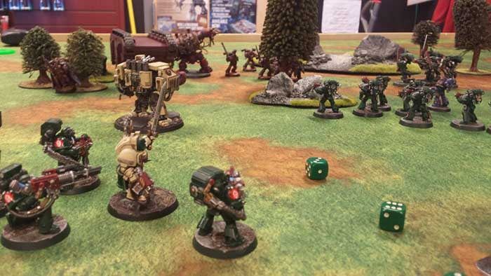

Warhammer 40,000
O hře
Warhammer 40 000 [a] je miniaturní válečná hra produkovaná společností Games Workshop. První vydání knihy pravidel bylo vydáno v září 1987. Poslední vydání je osmé, které vyšlo v červnu 2017. Warhammer 40 000 je nejoblíbenější miniaturní válečnou hrou na světě.
Stejně jako v jiných miniaturních bojových hrách hráči zahajují bitvu pomocí miniaturních modelů válečníků a bojových vozidel. Herní plocha je stolní model bojiště, který zahrnuje modely budov, kopců, stromů a dalších prvků terénu. Hráči se střídají, aby pohybovali svými modelovými válečníky kolem bojiště a bojovali s válečníky druhého hráče. Tyto boje jsou řešeny za pomoci kostek a jednoduché aritmetiky.
Svět Warhammer
Warhammer 40 000 se odehrává ve vzdálené budoucnosti, kde stagnující lidskou civilizaci napadají nepřátelští mimozemšťané a zlovolní nadpřirození tvorové. Modely ve hře jsou směsí lidí, mimozemšťanů a nadpřirozených monster, ovládajících futuristické zbraně a magické síly.
Spin-offs
Warhammer 40 000 vytvořil řadu spin-off stolních her. Patří sem Battlefleet Gothic , který simuluje boj vesmírné lodi; a Space Hulk , který simuluje boj v mezích opuštěné kosmické lodi. To také plodilo mnoho videoher, takový jako Dawn of War série. Nakonec vytvořila velké množství románů a komiksů, které podrobně rozebírají fiktivní prostředí.
{kind=link}